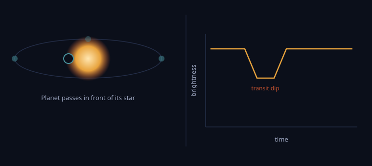

A semester-long Data Science Lifecycle project
What has been found around other stars so far, and how much of it could plausibly support life? This project follows the full data science lifecycle, from gathering and cleaning to exploring, modeling, and communicating, using the public record of confirmed exoplanets.
